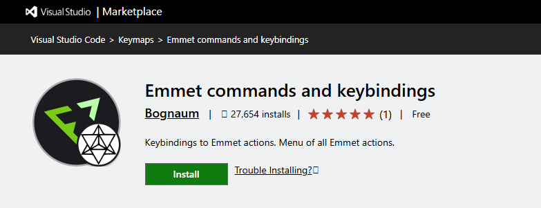

Продвинутый HTML и CSS
1 2 3 4 5 6 7 85.8 Команды и сочетания клавиш Emmet.
Согласно документации Emmet, обладает тремя базовыми функциями:
- Расширение аббревиатур - Emmet использует специальный синтаксис, позволяющий преобразовывать короткие фрагменты кода, напоминающие селекторы CSS, в полноценный HTML-код. Преобразование, как правило, выполняется по нажатию клавиши `Tab`.
- Emmet actions — команды для расширенного редактирования HTML-кода
- Сниппеты Emmet — это заранее сохранённые куски кода, которые вызываются с помощью специальных сокращений и формул. Emmet используется преимущественно для создания HTML-каркаса, но его также можно применять для написания CSS и JavaScript.
Аббревиатуры
Сокращения - это основа инструментария Emmet: эти специальные выражения анализируются во время выполнения и преобразуются в структурированный блок кода, например, HTML.Синтаксис аббревиатур похож на CSS-селекторы с несколькими расширениями, специфичными для генерации кода. Так что каждый веб-разработчик уже знает, как им пользоваться. Вот пример: эта аббревиатура

Синтаксис сокращений
В этом и есть принцип работы Emmet — пишем простые сокращения, нажимаем TAB и они
разворачиваются в сложные фрагменты
кода. Покажем на примере тега div: чтобы его развернуть, пишем div, нажимаем TAB и
разворачивается тег.
Здесь нет определенного набора тегов — каждый разработчик может написать любое слово и
преобразовать его в тег, который
ему будет удобно использовать. Если написать test и нажать TAB — получится тег: . Таких
тегов может быть сколько угодно
— все зависит от ваших задач и фантазии.
Можно использовать имена элементов, такие как div для создания HTML-тегов.
Элементы
Вы можете использовать названия элементов, такие как div или p, для создания HTML-тегов. В Emmet нет предопределенного набора доступных имен тегов, вы можете написать любое слово и преобразовать его в тег:
footer → <foo></foo>

Операторы вложенности
Emmet actions